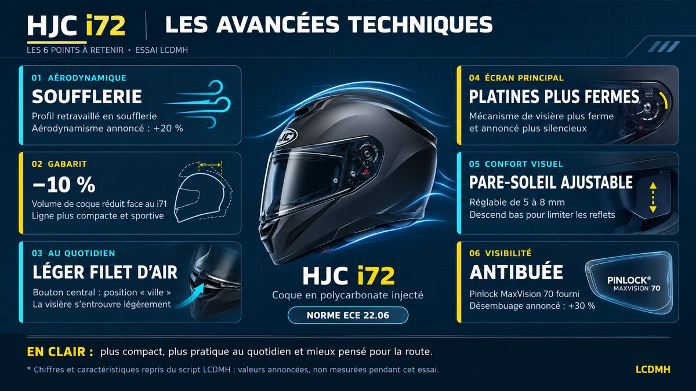

HJC i72 à 220 € : plus silencieux que mon RPHA 91 ?
Publié le 28 octobre 2026 · 8 heures de route
En réalisant cet essai, je ne pensais pas que j'allais avoir une aussi bonne surprise avec ce casque de moyenne gamme.
Avec le HJC i72, une accélération m'a donné ma première impression : à l'oreille, ce casque à 220 € m'a paru nettement plus silencieux que le modulable que je porte toute l'année.
Attention, je ne parle pas de décibels. Je n'ai pas de sonomètre, et je ne vais pas prétendre avoir mesuré quoi que ce soit. Je parle de ce que j'entends quand je roule : le vent, le moteur, ce bruit de fond qui fatigue au bout de quelques heures.
Ce que cet essai est, et ce qu'il n'est pas. Deux casques, la même portion de route, la même bulle de NT1100 abaissée au maximum, le même micro, les mêmes conditions. Ce n'est pas une mesure acoustique instrumentée : c'est un ressenti de roulage, refait dans les deux sens pour éviter de me raconter des histoires.
Deux précisions qui comptent. Mon RPHA 91 est un modulable, le i72 est un intégral : deux conceptions différentes, avec moins de joints et moins de fuites sur un intégral. Et mon RPHA 91 affiche 80 000 km au compteur — son âge et son usure jouent forcément dans la comparaison.
D'abord, ce que c'est
FAIT Le i72 remplace le i71 dans la gamme HJC. Coque en polycarbonate composite avancée, ligne plus compacte, et un travail aérodynamique mis en avant par le constructeur : force de traînée réduite de 20 %, force de portance réduite de 35 % et zone du menton 25 % plus petite que sur le i71.
FAIT Tous les chiffres de cette section viennent du constructeur. Ils sont annoncés, je ne les ai pas mesurés.
| Caractéristique | HJC i72 — données constructeur |
|---|---|
| Poids annoncé | 1 540 g en taille M |
| Homologation | ECE 22.06, casque intégral |
| Coque | Polycarbonate composite avancé, 3 tailles de calotte |
| Écran | HJ-52, classe optique 1, UV 99 %, 5 crans, verrouillage central |
| Pare-soleil | HJ-V12, réglable, commande en bas à gauche |
| Ventilation | 5 entrées d'air, 2 extracteurs, prise d'air mentonnière |
| Jugulaire | Boucle micrométrique |
| Intérieur | Démontable et lavable, Oeko-Tex, passage pour lunettes |
| Intercom | Logements prévus pour système Bluetooth |
| Inclus | Cache-nez, bavette anti-remous, housse — sans Pinlock |
| Garantie | 3 ans |
| Prix | à partir de 219,90 € en coloris uni (259,90 € en décoration) |

Le bruit : ce qui m'a le plus surpris
VÉCU Je mets 9 sur 10 à l'insonorisation ressentie. Sur la même portion, à vitesse élevée, je tiens difficilement un quart d'heure dans mon modulable sans avoir mal aux oreilles, alors que dans le i72 j'enchaîne sans y penser.
Je le répète parce que c'est important : c'est mon oreille, pas un appareil de mesure. Et deux éléments jouent contre mon RPHA 91 dans cette comparaison : c'est un modulable, donc structurellement plus bruyant qu'un intégral, et il a 80 000 km. Un casque qui vieillit, ce sont des mousses tassées, des joints qui fatiguent, un ajustement qui se relâche.
ANALYSE Cela dit, ça n'explique pas tout. HJC annonce justement que ce travail aérodynamique — traînée et portance en baisse — sert à réduire le bruit et à gagner en stabilité à vitesse élevée. Mon ressenti va dans ce sens, sans que je puisse dire quelle part revient à la conception du casque et quelle part à l'usure du mien.
Visibilité, écran et pare-soleil : le sans-faute
VÉCU Le champ de vision : 10 sur 10. Rien dans le regard, aucun montant gênant, et le passage des branches de lunettes se fait sans lutte — un peu mieux, à mon ressenti, que dans mon RPHA 91.
VÉCU Le mécanisme de visière est ferme, franc, agréable à manipuler. Les platines me paraissent plus fermes que celles de mon RPHA 91, ça ne flotte pas. La visière reste ouverte à vitesse raisonnable, puis elle finit par se refermer seule au-delà de 140-150 km/h, bulle baissée. Ce n'est pas un défaut, c'est une limite à connaître.
VÉCU Le pare-soleil descend particulièrement bas. Sur mon ancien Schuberth, il s'arrêtait plus haut et je gardais une bande de ciel dans le champ. Là, le regard est couvert. Et comme il s'avance, il ne vient pas buter contre le nez : même avec un nez long, il se règle.
La buée : ce qui vient du casque, ce qui vient de la moto
VÉCU HJC annonce un désembuage plus rapide que sur le i71. Dans mes conditions, ventilation fermée derrière la bulle de la NT1100, un peu de buée s'installe quand même. Et attention : le Pinlock n'est pas fourni avec ce casque, donc je n'ai pas pu compter sur lui. C'est un accessoire à ajouter si vous roulez souvent dans le froid ou sous la pluie.
ANALYSE Et il faut être juste : sur une moto carénée, la bulle modifie le flux d'air qui arrive sur le casque. Les ventilations sont moins alimentées, l'air chaud et humide stagne plus longtemps. La buée dépend donc autant des conditions de roulage et de la protection aérodynamique de la moto que du casque lui-même. Je ne vais pas faire porter au i72 un problème que ma bulle aggrave.
Le poids : 1 540 g annoncés, un gabarit contenu
FAIT Le i72 est annoncé à 1 540 g en taille M. À l'usage, je l'aurais donné pour un kilo six : c'est le ressenti que j'ai eu, et c'est déjà correct pour un intégral de ce prix.
ANALYSE Il faut remettre les choses à leur place : un modulable, c'est tout de suite 1 700 à 1 750 g. Mon RPHA 91 est donné pour environ 1 740 g, soit près de 200 g de plus. Autrement dit, le i72 n'est pas un poids plume, mais il est contenu pour sa catégorie, et plus léger que beaucoup de casques plus chers et plus équipés.
Ces 150 à 200 grammes, ça paraît peu sur une balance. En physique, ça compte : c'est de la masse, donc de l'inertie. Dans les freinages, les accélérations et les mouvements de tête, une masse supérieure demande plus d'effort aux cervicales, toutes choses égales par ailleurs. Ce n'est pas une douleur que j'ai constatée avec le i72 — c'est le mécanisme qui est derrière, et ici l'écart joue plutôt en faveur du casque.
Polycarbonate ou fibres : ce que ça change vraiment
FAIT Sur une coque en polycarbonate, la matière est chauffée puis injectée sous pression dans un moule en acier : la coque sort d'un bloc, prête à être équipée. Sur une coque en fibres composites, on superpose des couches — carbone, aramide, fibre de verre — liées par de la résine, et la coque est assemblée.
Cette différence de fabrication explique surtout des écarts de poids, de volume et de coût : le polycarbonate est moins cher à produire, mais il faut plus de matière pour obtenir la même rigidité, donc la coque est plus lourde et plus encombrante. Les fibres coûtent plus cher et demandent plus de main-d'œuvre, mais permettent des coques plus fines et plus légères.
ANALYSE En revanche, il faut arrêter avec un raccourci qu'on lit partout : ce n'est pas la coque seule qui encaisse le choc. La protection vient de l'ensemble — la coque extérieure répartit l'impact et résiste à la pénétration, le calotin absorbant en polystyrène se déforme pour encaisser l'énergie, et la jugulaire maintient le casque en place. Deux casques conçus différemment peuvent atteindre le même niveau de protection, et c'est justement le rôle de l'homologation ECE 22.06 de le vérifier.
Quand faut-il changer un casque ?
FAIT Puisqu'on parle de durée de vie, voilà la règle, et elle ne dépend pas du matériau de la coque : les fabricants recommandent en général de remplacer un casque après cinq ans d'utilisation, ou sept ans après sa date de fabrication s'il a peu servi. Et il faut le remplacer immédiatement après un choc, même s'il n'y a aucune trace visible.
Ce n'est pas la coque qui lâche, ce sont les mousses et les matériaux qui vieillissent, et le calotin qui perd sa capacité à absorber. Une coque en fibres n'est pas éternelle, une coque en polycarbonate n'est pas morte au bout de cinq ans par principe : c'est le temps et les chocs qui décident, pas l'étiquette du matériau.
Le point de vigilance : la pression au front
VÉCU Après cinq heures de route, une pression désagréable est apparue sur le haut du front. Avant ma sortie suivante de trois heures, j'ai appuyé très légèrement avec le doigt sur le polystyrène à cet endroit, et je n'ai plus rien senti. C'était vraiment peu de chose, mais ça suffisait à gêner, et c'est le genre de détail qui se règle en trente secondes quand on sait où ça appuie.
À qui je le conseille
OPINION Trois profils pour qui ce casque me paraît un bon choix : le jeune permis qui veut un vrai intégral sans mettre 500 € dedans, le passager ou la passagère qui monte occasionnellement, et le motard qui cherche un bon rapport qualité-prix pour rouler régulièrement sans viser le haut de gamme.
Et pour quelqu'un qui roule beaucoup, je ne le mets pas de côté : à ce poids, avec une insonorisation de ce niveau et un prix pareil, il peut très bien servir au quotidien, même sur de longues distances. Simplement, sur 15 000 km par an, un essai de huit heures ne suffit pas à trancher la question du confort dans la durée — je le dis, et je laisse la réponse à ceux qui l'auront usé sur une saison entière.
Le prix
FAIT À partir de 219,90 € en coloris uni, 259,90 € en décoration, au prix public conseillé affiché par HJC au moment de l'essai. À vérifier en magasin, les prix bougent.
Mon verdict
Huit heures de route, une insonorisation qui m'a vraiment surpris à l'oreille, un pare-soleil et un champ de vision impeccables, un poids contenu pour la catégorie, et un prix qui reste sous la barre des 220 €. Le i72 n'est pas parfait — la buée dépend beaucoup de la moto, le Pinlock n'est pas fourni, et l'ajustement mérite d'être vérifié — mais à ce tarif, il défend très bien ses arguments.
Ce que j'ai aimé : le bruit ressenti, le pare-soleil, la visière ferme, le champ de vision, le poids contenu, la garantie 3 ans.
Ce qui demande attention : l'ajustement au niveau du front, la buée quand la ventilation est fermée, le Pinlock à ajouter, et le fait que la comparaison acoustique reste un ressenti, pas une mesure.
La vidéo du test
La vidéo ne s'affiche pas ? Regarde-la directement sur YouTube.
À lire aussi
- Tous les essais et guides moto LCDMH
- Honda NT1100 : mon avis après 25 000 km — la moto avec laquelle j'ai testé ce casque
- Tenue 4 saisons Spidi : le test après un road trip